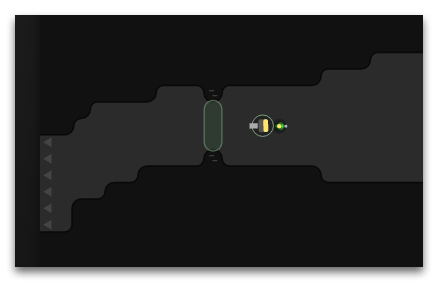
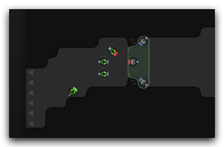

Screeps 的世界危机重重，本文主要介绍保卫自己的领土不受入侵的方法。
安全模式
当你新开一局游戏的时候，房间的安全模式会被打开。这意味其他的 creeps 不能在你的房间里对你的 creeps 造成任何影响（但是你可以干爆他们，RUA！）。详细的介绍看 StructureController
安全模式持续 20,000 个游戏 tick（大约20小时，实际取决于每个游戏 tick 的具体时长）。如果 room controller 存有额外的激活次数也可以通过 StructureController.activateSafeMode 手动激活:
Game.rooms.W1N1.controller.activateSafeMode()每一次升级时 controller 都会获得一次激活。除此之外还可以借助 ghodium 资源通过 Creep.generateSafeMode 增加激活次数。
安全模式是 GG 前的最后一道防线，但是每个玩家在一个镜像世界同时最多只能有一个房间处于安全模式，因此不能依赖安全模式用来防御，而应该使用墙、城墙、塔、creep 来构建房间的防御体系。
被动防御：墙（Walls）
最简单的防守方法就是在出生保护期内在合适的位置构建一些墙壁。和环境中天然的墙不同的是，建造的墙离房间边缘必须有 2 格以上的距离，并且可以被敌人摧毁。因此只是建造墙还不够，还需要强化墙壁以拖延对手的进攻时间。

墙的初始耐久只有 1 点。如果想要拖延敌人几小时（甚至几天）需要借助工人 Creep 使用修复动作强化它。墙的耐久最多可以修复到 300,000,000 点。如果你花了足够多的资源，这样的一个墙可以抵御很多天的攻击。 一个墙的占地空间只有单个方格，你可以建造多排墙。
被动防御：城墙（Ramparts）
然而，墙有个弊端就是：虽然可以阻止敌人，同时也会阻止自己的单位移动，阻碍己方势力的扩展。
这也是城墙的意义所在。城墙对敌人来说和墙一样，但是自己的单位却可以自由穿过。城墙还可以保护 creep，在城墙被摧毁前，其中的单位是无法被攻击的，而且还可以攻击敌人。

和普通的墙一样，城墙的初始耐久也是 1 点，最大的耐久值由控制器等级决定。在之前的文章控制中介绍过。
城墙和普通墙不一样的地方在于：每过若干个游戏 tick 耐久值就会掉一点，所以需要分配工人来让你所有的城墙都保持坚挺，并且没有磨损。
主动防御：塔（Towers）
当被动的防御系统经历持续几天的攻击后（例如，当你下线登出游戏时），有时他将不可避免地被摧毁。因此在依靠强化之外，还要结合其他的一些机制来进一步提升防御效果。

在控制器等级 3 级以后就可以建造塔（Tower）来进行主动防御。和墙与城墙不同，塔的防御是主动的。通过消耗能量，塔可以攻击(attack)敌人、治疗(heal)友军以及修复(repair)建筑。
塔的攻击距离覆盖整个房间，但是效果会随着与目标的距离而衰减。因此，应该始终将塔布置在接近它们潜在目标的位置。
塔的任何动作将消耗 10 单位能量，所以你需要指派 Creep 监控塔的能量补给情况，并提供它们所需的补充。
下列代码展示了一段关于如何利用塔在房间里攻击敌人简单的示例
function defendRoom(roomName) {
var hostiles = Game.rooms[roomName].find(FIND_HOSTILE_CREEPS);
if(hostiles.length > 0) {
var username = hostiles[0].owner.username;
Game.notify(`User ${username} spotted in room ${roomName}`);
var towers = Game.rooms[roomName].find(
FIND_MY_STRUCTURES, {filter: {structureType: STRUCTURE_TOWER}});
towers.forEach(tower => tower.attack(hostiles[0]));
}
}主动防御：Creeps
虽然塔可以用来主动防御，但是并不是万能的。当对面安排了一队分工合理的 Creeps 来入侵时，是能够抵御多个塔楼的近距离攻击的。相对应的，我们也可以组织 Creeps 防御者来进行防守反击。

因为城墙可以保证在其面积上的单位免受任何形式的攻击，因此我们可以开发防御体系，让任何一个受攻击的方格都与一个被城墙保护着的 Creep 防御者相邻。不过要注意在和平时期持续建造它们，是挺耗资源的。所以最好是在被围困时快速构建他们。
为响应的 creep 编写 AI 逻辑非常复杂，但这是唯一能保护你的房间不受入侵的方法。
你可以在房间里生成 NPC 入侵者 来测试你的防御体系。
所以，设计具有适当行为逻辑的优秀的防御体系将使你的房间成为很难入侵的目标。但是永远不要在你的房间里匆匆忙忙的满足自己的成就。众所周知，进攻就是最好的防御。